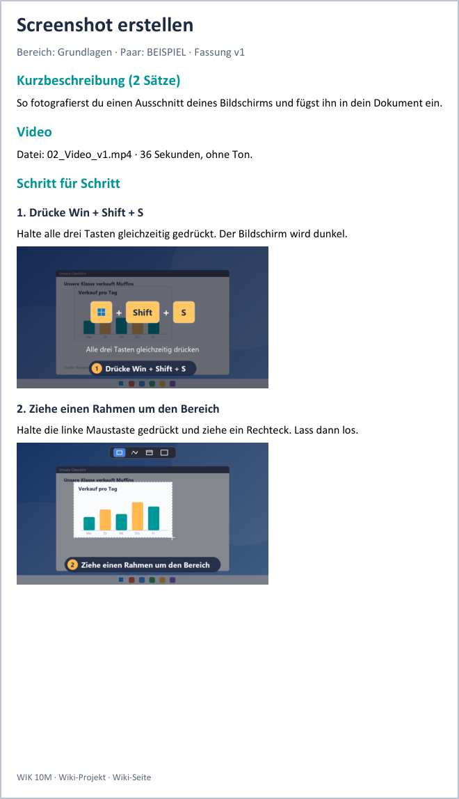
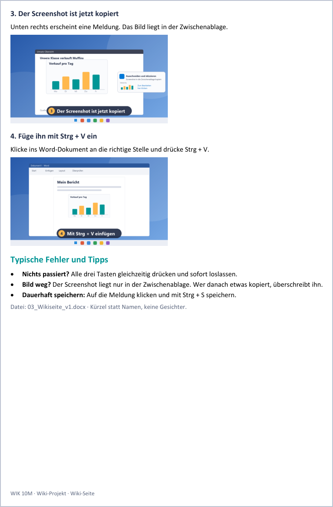

Wiki-Seite schreiben
aus dem WIK-Wiki, dem Nachschlagewerk der Klasse 10M
| Bereich | Grundlagen |
|---|---|
| Programm | Word |
| Umfang | höchstens 2 Seiten |
| Datei | 03_Wikiseite_v1.docx |
| Vorlage | herunterladen |
| Beispiel | herunterladen |
Zu deinem Video gehört eine Wiki-Seite als Word-Datei. Sie erklärt das Thema in kurzem Text mit Bildern. Aus deiner Datei baut die Lehrkraft später die Seite im Wiki. Damit das klappt, müssen alle Seiten gleich aufgebaut und formatiert sein.
1 Vorlage verwenden
- Lade die Vorlage herunter und öffne sie in Word.
- Datei → Speichern unter: speichere sie in deinem Ordner als
03_Wikiseite_v1.docx. - Ersetze die Platzhalter durch deinen Text. Lösche keine Überschriften und ändere ihre Namen nicht.
- Speichern und in Teams hochladen.
2 Aufbau
Die Abschnitte stehen immer in dieser Reihenfolge:
| Abschnitt | Formatvorlage | Das muss mindestens hinein |
|---|---|---|
| Titel | Überschrift 1 | Dein Thema, genau wie die Themenseite. Darunter eine Zeile: Bereich: … · Paar: KÜRZEL · Fassung v1 |
| Kurzbeschreibung | Überschrift 2 | Genau 2 Sätze: Was ist das, wofür braucht man es? |
| Video | Überschrift 2 | Dateiname 02_Video_v1.mp4 und die Länge in Sekunden. |
| Schritt für Schritt | Überschrift 2 | 3 bis 6 Schritte. Jeder Schritt hat eine Überschrift (Überschrift 3) mit Nummer, 1 bis 2 Sätze und ein Bild. |
| Typische Fehler und Tipps | Überschrift 2 | Mindestens 2 Punkte als Aufzählung. Beginne jeden Punkt fett mit einer Frage, zum Beispiel „Nichts passiert?“. |
| Schlusszeile | Normal | Datei: 03_Wikiseite_v1.docx · Kürzel statt Namen, keine Gesichter. |
3 Formatierung
- Überschriften: Nutze die Formatvorlagen in Word (Start → Formatvorlagen → Überschrift 1, 2, 3). Mache Überschriften nicht selbst groß oder fett.
- Schrift: Calibri, Größe 11. Ändere Schriftart, Größe und Farben nicht.
- Bilder: Pro Schritt ein Bild. Füge Screenshots mit Strg + V ein (so geht’s). Bildbreite etwa 8,5 cm: Bild anklicken → Bildformat → Breite.
- Bildinhalt: Nur der nötige Ausschnitt. Keine Namen, Passwörter oder Gesichter.
- Aufzählung: Start → Aufzählungszeichen. Keine Punkte von Hand tippen.
- Länge: Höchstens 2 Seiten. Die Seitenränder bleiben, wie sie sind.
- Rechtschreibung: Vor dem Speichern mit Taste F7 prüfen.
4 Beispiel
Die Beispielseite zu „Screenshot erstellen“ hat zwei Seiten und genau diesen Aufbau:




Zum Herunterladen: Beispiel_03_Wikiseite_v1.docx. Die fertig gebaute Seite im Wiki siehst du bei Screenshot erstellen.
5 Checkliste
- Die Vorlage wurde benutzt, alle Überschriften sind noch da.
- Titel heißt genau wie die Themenseite, mit Bereich, Kürzel und Fassung darunter.
- Die Kurzbeschreibung hat genau 2 Sätze.
- Im Abschnitt Video stehen Dateiname und Länge.
- 3 bis 6 Schritte, jeder mit Überschrift, 1 bis 2 Sätzen und einem Bild.
- Mindestens 2 typische Fehler.
- Höchstens 2 Seiten, Rechtschreibung geprüft.
- Keine Namen, Passwörter oder Gesichter in Text und Bildern.
- Die Datei heißt
03_Wikiseite_v1.docxund liegt in deinem Ordner in Teams.
6 Siehe auch
- Video-Planung: der erste Schritt
- Video-Tutorial: die Anforderungen an dein Video
- Mitmachen: der ganze Ablauf
Kategorien: Grundlagen